Всё, что нужно знать дома: как найти фильм, включить его на телевизоре, какие кнопки пульта что делают — и что делать, если что-то не работает.
Телефон и компьютерТелевизорПультЕсли что-то не так
АДРЕС В ПРИМЕРАХ: {{SITE}} · ВЕРСИЯ РУКОВОДСТВА: НОЯБРЬ 2026
Содержание
Что внутри
Названия кнопок и разделов выделены так: Смотреть на ТВ. Кнопки пульта — так: OKНазад. Значок новое отмечает то, что появилось после прошлой версии руководства (октябрь 2026).
Знакомство
Что такое Cineko
Cineko — наш домашний кинотеатр. Фильмы, сериалы, телеканалы, YouTube и музыка в одном месте: выбираете на телефоне или прямо на телевизоре, смотрите где удобно.
📱 Телефон и компьютер
Сайт {{SITE}}. Его можно установить как приложение. Удобно искать, читать описания, выбирать раздачу и управлять телевизором как пультом.
📺 Телевизор
Приложение Cineko открывается через Media Station X (или в браузере ТВ). Управляется обычным пультом, оформление — на выбор из {{DESIGN_COUNT}}.
🖥 Наш сервер
Ищет раздачи, готовит поток, при необходимости перекодирует звук и видео, хранит загрузки. За ним следит администратор.
А это Cineko — наш талисман
Маленький неоновый кот-робот. Он встречает на главной, думает вместе с ИИ, жуёт попкорн, пока грузится фильм, засыпает на заставке и переодевается под оформление: цилиндр в «Ар-деко», очки в «Матрице», козырёк в «Киберпанке».
Аккаунты и профили
Аккаунт — это логин и пароль, их выдаёт администратор. Внутри аккаунта можно завести несколько профилей («Кто смотрит?»): у каждого свои история, списки, оценки, рекомендации и настройки. Профиль можно закрыть PIN-кодом. Телевизор подключается к аккаунту один раз (код или QR), дальше открывается сразу.
Что можно смотреть
Что
Как это работает
Фильмы и сериалы (торренты)
Основной источник. Сервер находит раздачи на трекерах и проигрывает их сразу — ничего не нужно скачивать целиком. Вы выбираете качество, озвучку, размер — или доверяете выбор Cineko.
Онлайн-источники
Для части фильмов, сериалов и аниме есть «Смотреть онлайн» — сразу, без торрента.
ТВ-каналы
Раздел «ТВ»: прямой эфир с телепрограммой. Плейлисты добавляет администратор.
«Видео» (YouTube)
Подписки, тренды, поиск, «Смотреть позже» — без рекламы, через наш сервер.
Cineko Music новое
Музыка на {{SITE}}/music. Кнопка «Послушать саундтрек» у фильма собирает плейлист его музыки.
Телефон и телевизор не обязаны быть в одной сети: всё идёт через сервер.
Знакомство
Что нового с октября
Смотреть удобнее
«Заставки и титры» — кнопка «Пропустить заставку», «Пропустить пересказ», а на титрах — «Следующая серия». Можно пропускать автоматически.
Главы на полосе перемотки; ◀ ▶ останавливаются на началах глав.
Плавность — раздачи, которые подтормаживают на вашем ТВ, уходят вниз списка, а если картинка дёргается, Cineko предложит лёгкую раздачу.
Место просмотра не теряется, даже если телевизор сам перезапустил поток с нуля.
Таймер сна на ТВ: «После этой серии» или через 15–90 минут.
Заставка: на паузе и на главной через 10 минут экран темнеет — спящий Cineko или логотип DVD.
«Отсчёт перед следующим» и автовоспроизведение YouTube (следующая часть серии).
Компаньон просмотра (ИИ)
«Ранее в сериале» — краткий пересказ того, что вы уже видели, если давно не смотрели.
«После титров» — объяснение финала, «почему это важно» и чат со спойлерами.
«Цитаты» и «Факты» о фильме.
Подборки
Темы: «Вам нравятся фильмы про космос» — ряды по любимым темам.
Рубрики от ИИ («Подборка: Кино для дождливого вечера») и личные причины у «Подобрано для вас»: «✦ Тихая и красивая, как любимый вами…».
«Послушать саундтрек» — музыка фильма в Cineko Music.
Вид
{{DESIGN_COUNT}} оформлений: добавились «Поп-арт», «Конструктивизм», «Матрица», «Стикербук», «Тамагочи», «Одиссея», «Мультфильм», «Немое кино» и другие — все в галерее в конце.
«Сюрприз» — каждый день или неделю другое оформление из избранных.
Звуки интерфейса в духе оформления (по умолчанию выключены).
Анимация загрузки «Матрица», костюмы Cineko.
Қазақша — казахский язык интерфейса (рядом с русским и английским).
Телевизор запускается быстрее: каждое оформление загружается отдельно, только когда оно нужно.
01
Телефон и компьютер
Сайт {{SITE}} работает в любом браузере. На телефоне его удобно установить как приложение — со значком на главном экране.
Вход и установка
Главный экран и «Для вас»
Поиск, каталог, ИИ
Страница фильма
Цитаты, факты, саундтрек
«Ранее в сериале», «После титров»
Раздачи и «Смотреть на ТВ»
Пульт
Списки, загрузки, ТВ-каналы, «Видео»
Устройства и настройки
Cineko, уют, скорость
Раздел администратора
Телефон · начало
Вход и установка на телефон
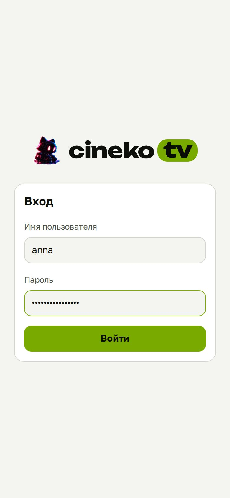
Вход: логин и пароль от администратора.
Вход
Откройте {{SITE}}, введите Имя пользователя и Пароль, нажмите Войти. Браузер запомнит вход. Если много раз ошибиться, сайт попросит подождать несколько минут.
Установить как приложение
Android (Chrome)
Внизу появится карточка «Установите Cineko» — нажмите Установить. Закрыли её — нажмите на свой аватар справа вверху → Установить приложение или меню Chrome ⋮ → «Установить приложение».
iPhone / iPad (Safari)
Нажмите Установить — Cineko покажет три шага: «Поделиться» (квадрат со стрелкой) → «На экран „Домой“» → «Добавить».
Установленное приложение открывается на весь экран и запускается быстрее. Всё остальное — как на сайте.
Язык
Настройки → Это устройство → Язык: Русский, English или Қазақша новое. Язык свой у каждого браузера и телевизора.
Телефон · главная
Главный экран
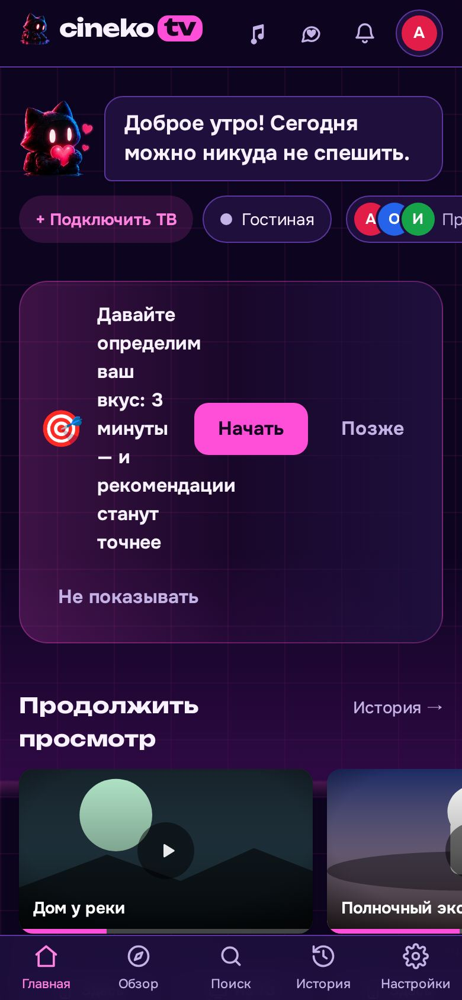
Главная на телефоне.
Cineko здоровается — фраза и настроение зависят от времени суток и дня недели («Вечер выходного — самое время для длинного фильма»). Меняется раз в день.
Ваши телевизоры. Цветная точка — ТВ в сети. Нажмите, чтобы открыть его пульт. + Подключить ТВ — всегда первым. Правее — профили: сменить, добавить, поставить PIN.
«Давайте определим ваш вкус» — у нового профиля: оценить известные фильмы и ответить на пару вопросов (3–5 минут). Можно Не показывать.
«Продолжить просмотр» — недосмотренное. Нажмите и выберите, где продолжить.
Главная, Обзор, Поиск, История, Настройки (средние три — первые включённые в «Вкладки меню»).
Значки вверху справа
♫ Cineko Music · 💬 «Вам посоветовали» — фильмы от близких · 🔔 сообщения администратора · аватар — меню профиля: смена профиля, «Устройства», «Загрузки», «Настройки», «Админ», «Установить приложение», «Выйти».
На компьютере вместо нижнего меню — вкладки сверху: «Главная», «ТВ», «Видео», «Обзор», «Новые серии», «История», «Спросить ИИ»; лишние можно скрыть в «Настройки» → «Вкладки меню».
Телефон · что посмотреть
«Для вас»: темы, подборки ИИ и «Почему это?» новое
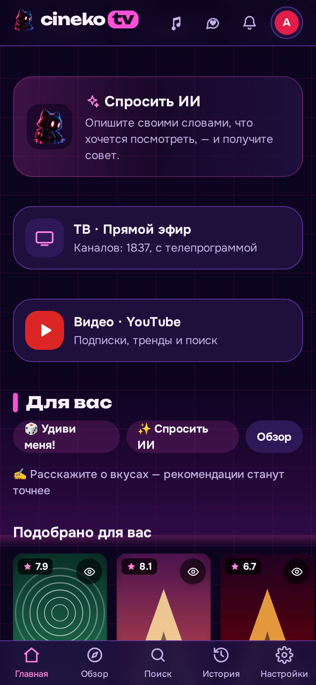
Кнопки «Для вас» и «Подобрано для вас».
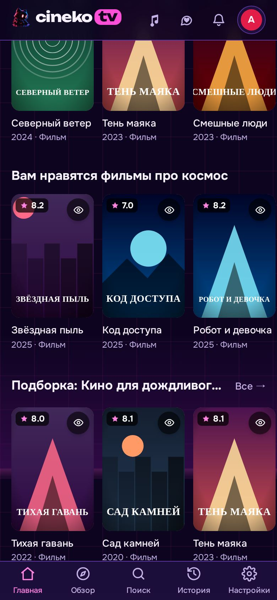
Тема и рубрика от ИИ.
Ниже на главной — раздел «Для вас» с кнопками 🎲 Удиви меня!, ✨ Спросить ИИ, Обзор. Под ними ряды, которые Cineko собирает по вашим оценкам и просмотрам:
«Подобрано для вас» — главный ряд. Каждую ночь ИИ пересортировывает его под вас и пишет у карточки личную причину: «✦ Короткий и смешной — то, что нужно после тяжёлого дня».
«Вам нравятся фильмы про …» — ряд по вашей любимой теме (космос, ограбления, путешествия во времени…). Темы видны и в «ДНК вкуса» → «Темы».
«Подборка: …» — рубрики, которые ИИ составляет из подходящих вам фильмов («Кино для дождливого вечера»).
«Потому что вам понравился …», «Ещё от режиссёра …», «Скрытые жемчужины», «Что-то новенькое», «Семья советует», «Популярное на этой неделе».
Почему это? Не интересно?
На карточке — маленький значок глаза Почему это?: объясняет выбор. Там же Не интересно — фильм больше не будут советовать («Скрыто. Больше не будем советовать…» → Вернуть).
Чем больше оценок — тем точнее
Ставьте звёзды на странице фильма. Не хочется проходить тест вкуса? В «ДНК вкуса» есть ✨ Заполнить по моим фильмам — Cineko сам заполнит любимые жанры, годы и страны по тому, что вы уже оценили (без ИИ, за секунду). Расскажите о себе словами: Настройки → О моих вкусах — это учитывают и ИИ-подборки, и «Спросить ИИ».
Обзор и «Удиви меня!»
Обзор: «Под настроение», «По десятилетиям», «Страны и языки», лучшее по жанрам и подборки дня. Удиви меня!: выберите настроение, «Фильм» / «Сериал» / «Неважно» и нажмите большую кнопку; «Ещё вариант» — другой фильм. С галочкой «Без спойлеров» постер виден только после «Показать».
Телефон · поиск
Профили, поиск, каталог и «Спросить ИИ»
Профили
Профили → Добавить профиль: имя, цвет, аватар и, если нужно, PIN (4–8 цифр). Нажмите на профиль, чтобы смотреть от его имени. У каждого профиля — своя история, оценки, «Буду смотреть» и настройки (общие для всех ваших устройств).
Не помните название? Кнопка ✦ ИИ рядом — пишите, что хочется: «уютная комедия на вечер», «как Интерстеллар, но покороче». Вопрос уходит по Enter, ответ и фильмы появятся прямо под строкой.
Каталог
Обзор → Весь каталог (или «Все →» у любого ряда). «Фильмы» / «Сериалы», Фильтры: жанр, год, длительность, язык, «Рейтинг от»; «Сортировка». Цифры на постерах — рейтинг (Кинопоиск, IMDb или TMDB — «Настройки» → «Рейтинг на постерах»).
Актёры и режиссёры
Имена в «В ролях» нажимаются: фото, биография и все фильмы и сериалы человека.
«Спросить ИИ»
Карточка на главной (на компьютере — вкладка сверху). Напишите, что хочется: «что-нибудь лёгкое на вечер с женой, не ужасы, до 2 часов» — и нажмите Спросить. Или выберите пример: «Лёгкое на вечер», «Сериал на выходные», «Для всей семьи»…
«Всё» / «Фильмы» / «Сериалы» и «Включая просмотренное» уточняют вопрос.
«Насколько смело»новое: «Точнее» — ближе к вашему вкусу, «Смелее» — неожиданнее.
У каждого фильма в ответе: «Смотреть», «На ТВ», «Не интересно». Под ответом — «Уточнить» («Только комедии», «Что-нибудь поновее»).
«Прошлые вопросы» хранятся внизу.
Число вопросов к ИИ в день ограничено (общий счётчик для «Спросить ИИ», «✦ ИИ» в поиске, «Ранее в сериале» и «После титров»). Если ИИ не настроен или лимит исчерпан, появится «ИИ выключен» или «На сегодня всё».
Списки и оценки
«Буду смотреть», ♡ «Избранное», «Оценить» (1–10), «Моя заметка» — на странице фильма. После просмотра Cineko спросит «Как вам …?». Оценки с Кинопоиска можно импортировать: «Настройки» → «Импорт оценок с Кинопоиска».
Телефон · фильм
Страница фильма
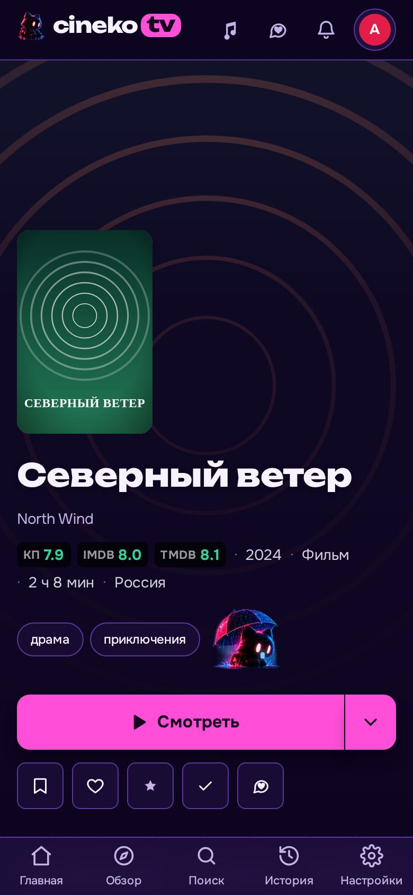
Верх страницы.
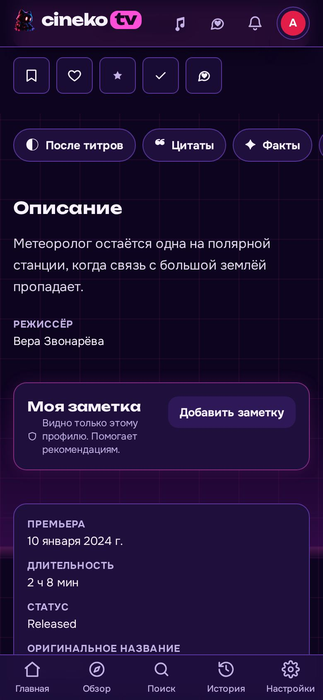
Кнопки под ним.
Смотреть на ТВ — главная кнопка. Телевизор сам выберет лучшую раздачу и начнёт показ. Если телевизоров несколько, Cineko спросит, на каком.
Смотреть здесь — на этом телефоне или компьютере.
Раздачи — все найденные варианты, чтобы выбрать самому.
Открыть на ТВ — показать страницу на телевизоре, чтобы выбрать там пультом.
Если фильм уже начат, кнопка называется «Продолжить с 1:02:05», рядом — «Сначала». После просмотра — «Смотреть снова».
Ниже
«Отметить просмотренным» · «Буду смотреть» · ♡ · «Оценить» · Посоветовать — отправить фильм с запиской другому члену семьи.
Строка дополнений новое: ❝ Цитаты · ✦ Факты · ♫ Послушать саундтрек · ↺ Ранее в сериале · ◐ После титров — о них на следующих страницах.
Ещё ниже — «Описание», «Моя заметка», «Трейлер», «В ролях», «Похожие», «Где посмотреть», награды.
Cineko рядом с названием реагирует на жанр: «Ой, страшно…», «Ха-ха!», «Я не плачу, это дождь».
Телефон · дополнения новое
Цитаты, факты и саундтрек
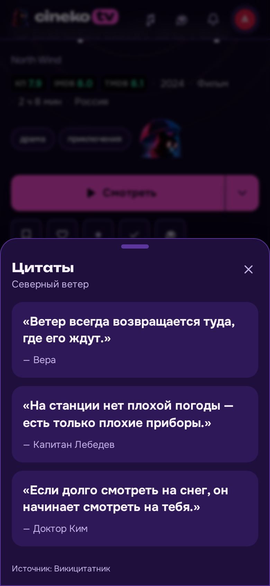
«Цитаты».
❝ Цитаты
Известные фразы из фильма с именем героя. Кнопка видна, только если цитаты нашлись (источник — Викицитатник). Если на русском их нет, Cineko покажет английские: «На русском цитат не нашлось — показываем английские».
✦ Факты
Интересное о съёмках, а также «Ляпы». Факты, раскрывающие сюжет, помечены «Спойлер» и скрыты — нажмите «Показать спойлер». Пометка «✦ ИИ» значит, что факты собрал ИИ: «Факты собраны ИИ и могут содержать неточности».
В первый раз сбор может занять несколько секунд («Ищем цитаты…», «Собираем факты…»), потом открывается мгновенно.
♫ Послушать саундтрек
Кнопка открывает Cineko Music: она соберёт (или найдёт уже готовый) плейлист с музыкой из фильма — песни, темы композитора — и сразу его включит. Плейлист остаётся в вашей музыке.
На телевизоре это пункт ♫ Саундтрек на телефоне в меню «Ещё»: на экране появится QR-код — наведите камеру телефона, и плейлист откроется на нём.
Cineko Music
Отдельное приложение на {{SITE}}/music (значок ♫ вверху): поиск музыки, альбомы, тексты песен, аккорды, плейлисты от ИИ и загрузка песен в телефон для офлайна. Оформление — как у Cineko.
Телефон · компаньон просмотра новое
«После титров» и «Ранее в сериале»
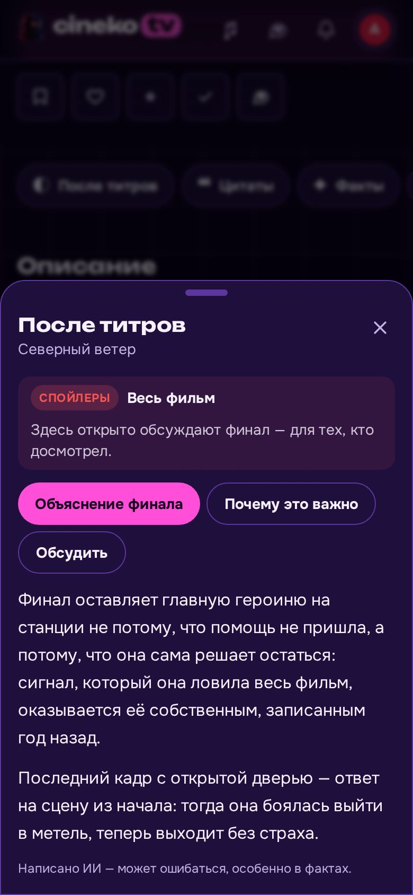
«После титров».
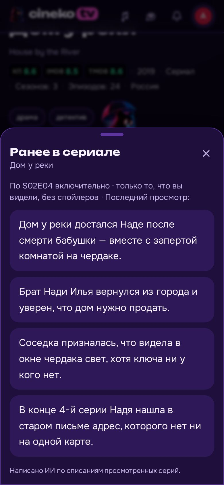
«Ранее в сериале».
◐ После титров
Появляется, когда вы досмотрели фильм (или сезон, или весь сериал). Здесь открыто обсуждают финал — «Спойлеры», только для тех, кто досмотрел.
«Объяснение финала» — что произошло в конце и почему.
«Почему это важно» — место фильма в кино, о чём он на самом деле.
«Обсудить» — чат с ИИ: «Спросите что угодно — спойлеры можно». Напишите вопрос («Финал, герои, что это значило…») и нажмите «Отправить». В одном разговоре несколько вопросов («Осталось вопросов: 5»), потом — «Новый разговор».
Строка сверху показывает, что обсуждается: «Весь фильм», «До конца 2-го сезона» или «Весь сериал».
↺ Ранее в сериале
Появляется у сериала, если вы не смотрели его неделю и больше. Четыре-пять фраз о том, что уже произошло — только по просмотренным сериям, без спойлеров («По S02E04 включительно»). Удобно перед продолжением.
Пишет ИИ — он может ошибаться, особенно в фактах. Ответы ИИ ограничены в день: «Ответы ИИ для этого профиля на сегодня закончились. Попробуйте завтра». Администратор может выключить компаньон для всех.
Телефон · сериал
Сериалы: сезоны и серии
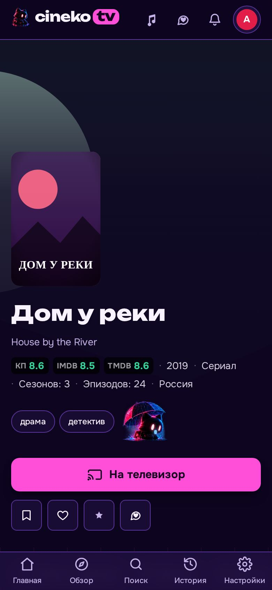
Страница сериала.
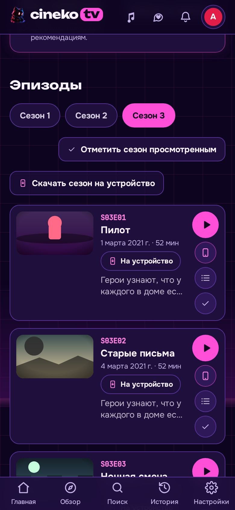
Сезоны и серии.
Под описанием — переключатель сезонов и список серий. Код серии («S02E04») показывает сезон и номер.
Цветной ▶
Смотреть эту серию на ТВ (лучшая раздача).
📱
Смотреть здесь, в браузере.
☰
Выбрать раздачу для этой серии.
✓
Отметить просмотренной (ещё раз — снять).
Над списком: «Отметить сезон просмотренным». Сериал сам предложит следующую серию: «Далее: S02E05».
«Без спойлеров» (в настройках) размывает кадры и описания непросмотренных серий.
Смотреть на телефоне
«Смотреть здесь» открывает плеер: ⏯, «Назад на 10 секунд» / «Вперёд на 30 секунд», «Озвучка», «Субтитры», «Скорость», «Во весь экран», «Картинка в картинке», «Следующая серия».
Главыновое — метки на полосе («Глава 2 · Станция»).
Пропускновое — справа внизу появляются «Пропустить заставку», «Пропустить пересказ», на титрах — «Следующая серия».
В конце серии — карточка «Следующая серия · Начнётся через 10 с» («Смотреть сейчас» / «Отмена»).
Если браузер не умеет звук раздачи, Cineko предложит «Перекодировать звук и смотреть здесь», «Другая раздача (лучше для браузера)» или «Открыть в VLC / другом приложении».
Телефон · выбор раздачи
Список раздач
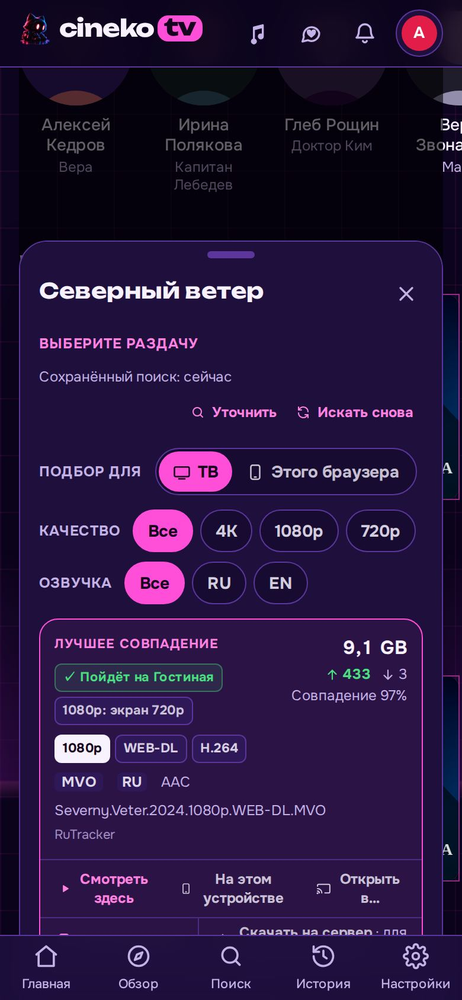
«Раздачи»: сверху — лучшее для выбранного экрана.
«Подбор для»: «ТВ» или «Этого браузера» — для какого экрана сортировать. Список отфильтрован под возможности экрана; «Показать все» — и неподходящие тоже.
Фильтры «Качество» (4K, 1080p, 720p) и «Озвучка» (RU, EN…).
«Лучшее совпадение» — вариант, который выбрал бы сам Cineko.
Размер, ▲ сиды (больше — быстрее старт) и «Совпадение 97%» — насколько это точно нужный фильм.
Смотреть здесь · На этом устройстве (VLC и др.) · Открыть в… / Смотреть на ТВ · Скачать на сервер.
Сверху — «Уточнить» (искать своими словами) и «Искать снова».
Для YouTube: «Качество», «Что дальше», «Остановить».
Если что-то мешает
ТВ уже что-то показывает
«Прервать «…» и открыть это?» — «Прервать» или «Отмена».
На ТВ не выбран профиль
Фильм откроется сам после выбора профиля.
«Телевизор не в сети»
Включите ТВ и откройте Cineko в Media Station X.
Прогресс общий: начали на телевизоре — на телефоне в «Продолжить просмотр» то же место, и наоборот. Пульт работает с любого телефона в доме, если человеку дали доступ к ТВ («Устройства» → «Поделиться»).
Телефон · ваша библиотека
Списки, история, загрузки
Списки
«Буду смотреть» и «Избранное» — кнопки на странице фильма. Открыть: «Настройки» → «Ваша библиотека» или меню аватара. На ТВ это раздел «Моё».
История и «Продолжить просмотр»
«История» в нижнем меню: всё просмотренное по месяцам, «Все» / «Фильмы» / «Сериалы» / «С оценкой», поиск. Недосмотренное — в «Продолжить просмотр» на главной.
Новые серии
Каждую ночь сервер проверяет ваши сериалы и собирает вышедшие серии. На ТВ — пункт «Новые серии», на компьютере — вкладка, на телефоне — карточка на главной.
Дневник и ДНК вкуса
«Дневник» — календарь и итоги месяца; «ДНК вкуса» — любимые жанры, десятилетия, режиссёры, актёры, а теперь и темы, сценаристы, операторы и композиторы новое.
Заметки и «Посоветовать»
«Моя заметка» — ваши впечатления и быстрые причины («Атмосфера», «Слишком медленно»…); видна только вам и помогает подбору. «Посоветовать» → человек и записка — у него появится «Вам посоветовали».
Загрузки на сервер
Раздача качается медленно и фильм то и дело останавливается? Попросите сервер скачать файл целиком — потом он играет с диска сервера без подтормаживаний.
Страница фильма → Раздачи.
У нужной строки — Скачать на сервер. У сериала — «Скачать эту серию» или «Скачать весь сезон».
Прогресс — на странице фильма и в «Загрузки» (меню аватара).
«Загружается 46%»
Идёт загрузка (скорость, сколько осталось).
«В очереди»
Ждёт, пока закончатся другие.
«Ждёт места на диске»
Сообщите администратору.
«На сервере ✓»
Готово, можно смотреть.
«Ошибка загрузки»
Ещё раз или другая раздача.
«Пауза» / «Продолжить», «Удалить», «Хранить дольше». Загрузки хранятся несколько недель после окончания или последнего просмотра; закреплённые не удаляются. Онлайн-источники скачать нельзя.
В телефон — без интернета
Фильм, уже скачанный на сервер, можно сохранить прямо в телефон — для дороги и самолёта: в плеере меню загрузки → Скачать на устройство. Сохранённое — в «Загрузки» → «На этом устройстве», играет без интернета.
Телефон · эфир и YouTube
ТВ-каналы и «Видео»
ТВ-каналы
Главная → «ТВ · Прямой эфир» (на компьютере — вкладка «ТВ»). Группы сверху: «Все», «Избранное», «Кино», «Детям»… и «Поиск каналов».
У канала: номер, что идёт «Сейчас» (полоска — сколько прошло) и «Далее».
☆ — «В избранное». Ненужный — «Скрыть канал»; вернуть — «Показать скрытые каналы».
Нажмите на канал: «Смотреть здесь» или «Включить на ТВ». Там же — «Телепрограмма».
В плеере: «Предыдущий канал» / «Следующий канал», «Список каналов», «В эфир».
⚙ — «Плейлисты»: какие показывать этому профилю.
Каналы в формате MPEG-TS телефон не играет («Включите его на ТВ») — на телевизоре они работают.
«Видео» (YouTube)
Главная → «Видео · YouTube». Ролики идут через наш сервер — без рекламы.
«Подписки»
Новые ролики ваших каналов, «Продолжить».
«В тренде»
Популярное сейчас.
«Поиск»
Ролики и каналы.
«Смотреть позже»
Отложенные ролики.
«История»
Что смотрели.
У ролика: «Качество», «Подписаться», «Смотреть позже», «На ТВ», «Похожие видео». Начатый ролик продолжится с того же места.
Автовоспроизведение новое
Когда видео закончится — следующая часть серии с того же канала, а если это не серия, случайное из похожих: карточка «Далее · Следующая часть · через 10 с» («Смотреть» / «Отмена»). Настройки: «Автовоспроизведение» и «Отсчёт перед следующим» (выключите — начнётся сразу).
«Видео сейчас недоступно: сервис YouTube не отвечает» — проблема на сервере, скажите администратору. Сервер сам перезапускает видеосервис каждую ночь в 3:00 (но не во время просмотра).
Телефон · телевизоры
Устройства
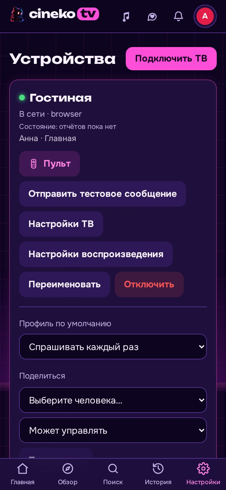
«Устройства»: телевизор «Гостиная».
«Настройки» → «Устройства» (на компьютере — вкладка сверху).
Подключить ТВ — новый телевизор по коду (вида K7QM-2XPD) или QR.
Пульт этого ТВ.
Отправить тестовое сообщение — проверить связь.
Настройки воспроизведения — как подбирать раздачи для этого ТВ.
Переименовать («Гостиная», «Спальня»), Отключить.
«Профиль по умолчанию» — кто смотрит без вопроса; или «Спрашивать каждый раз».
«Поделиться» — «Может управлять» (только пульт) или «Управление и свои профили».
«Состояние» — память и плавность ТВ по последнему отчёту (видит владелец).
Настройки воспроизведения
Cineko сам узнаёт, что умеет экран («Определено»: модель, экран, видео, звук) и подбирает раздачи. Обычно ничего менять не нужно. Вручную: «Максимальное разрешение», «Максимальный битрейт», «Максимальный размер файла», «Предпочтительный видеокодек», «HDR», «Звук», «Предпочитать файлы поменьше»; «Сбросить на авто».
«Слабый ТВ / медленный интернет»
720p, ≤ 8 Мбит/с, H.264, AAC
«Обычный»
1080p, ≤ 15 Мбит/с
«Мощный 4K»
4K, HEVC/HDR, без ограничений
«Телефон»
720p, небольшие файлы
Тормозит часто — Cineko предложит сам: «Похоже на слабое устройство или медленный интернет — применить пресет?».
Телефон · настройки
Настройки
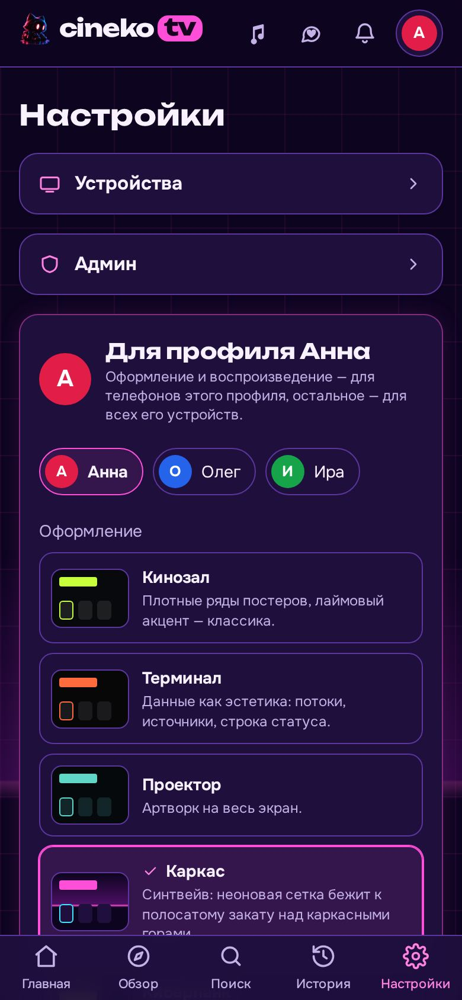
Начало: профиль и оформление.
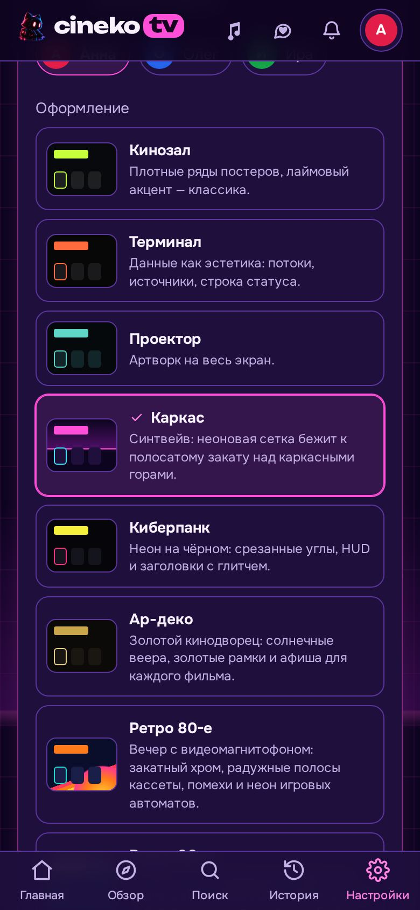
Выбор оформления.
Для профиля (на всех устройствах)
«Оформление» — 13 вариантов, меняет вид и сайта, и телевизора (подробно — в части «Телевизор»). «Сюрприз» — ниже.
«Тема»: как в системе / тёмная / светлая (у части оформлений только тёмная).
«Скрывать аниме», «Скрывать просмотренное», «Без спойлеров», «Рейтинг на постерах».
«Автоматически включать следующую серию», «Отсчёт перед следующим», «Заставки и титры».
«О моих вкусах», «Минимум оценок у фильма», «Источники».
Это устройство (только этот браузер)
«Язык»: English / Русский / Қазақша.
«Плеер по умолчанию на этом устройстве».
«Звуки интерфейса»новое — тихий щелчок на кнопках в духе оформления (щелчок Windows 95, стук видеокассеты, писк терминала). Молчат во время фильма. По умолчанию выключены.
Пресеты подбора раздач, «Предупреждать о медленной скорости», «Измерять скорость интернета в фоне».
Ещё ниже
«Ваша библиотека», «Импорт оценок с Кинопоиска», «Инструкции» (это руководство и инструкция по установке на ТВ), «Аккаунт и безопасность»: браузеры со входом, «Сменить пароль» (от 10 символов), «Выйти везде».
Администратор сервера видит, что сейчас смотрят, и историю просмотров.
Телефон · настройки новое
«Сюрприз», «Заставки и титры», язык и инструкции
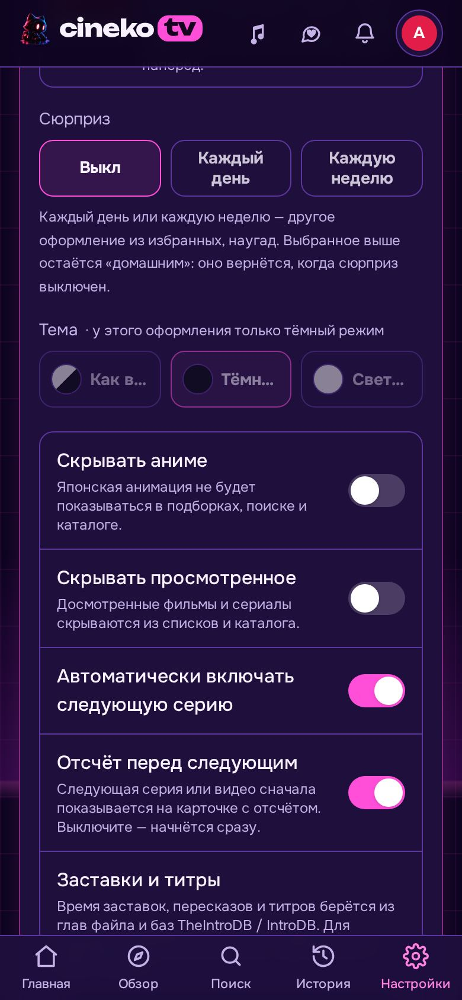
«Сюрприз» и «Тема».
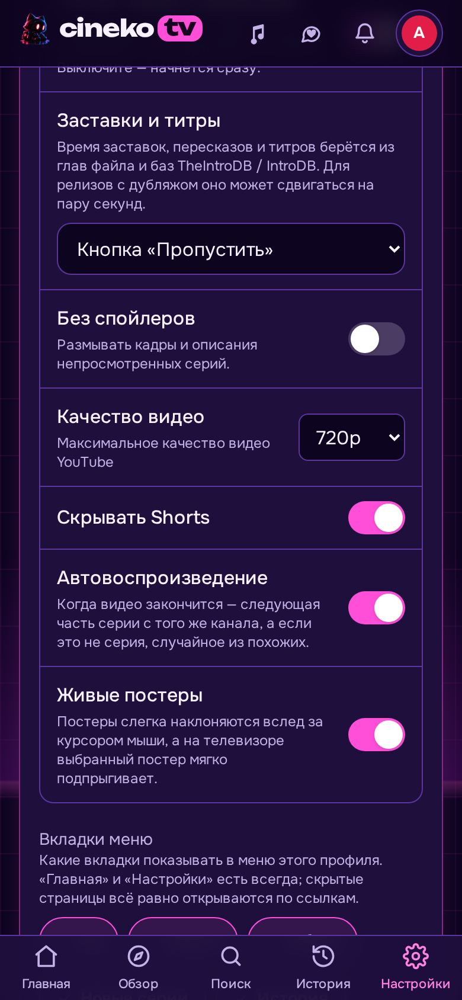
«Заставки и титры».
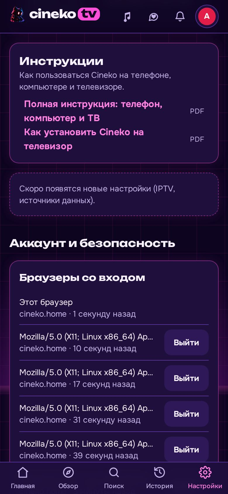
«Инструкции».
«Сюрприз»
«Выкл» / «Каждый день» / «Каждую неделю» — другое оформление из избранных, наугад. Выбранное в «Оформление» остаётся «домашним» и вернётся, когда сюрприз выключен. Когда сюрприз включён, у каждого оформления появляется ★: отметьте любимые (хотя бы два); ничего не отмечено — выбор из всех. Внизу видно «Сегодня: Ретро 80-е».
«Матрица»
Первый раз при выборе «Матрицы» Cineko спросит: «Это твой последний шанс». Красная таблетка — включить, Синяя таблетка — остаться на прежнем.
«Заставки и титры»
«Кнопка «Пропустить»» (по умолчанию) — во время заставки или пересказа появляется кнопка, на титрах — «Следующая серия».
«Пропускать сами» — заставки и пересказы пропускаются сами («Заставка пропущена · Вернуть»), на титрах начинается отсчёт следующей серии.
«Не показывать» — ничего не пропускать.
Время заставок берётся из глав файла и открытых баз; для дубляжа может сдвигаться на пару секунд.
Телефон и телевизор · уют
Cineko, уютный режим, праздники и скорость интернета
Cineko здоровается
На главной Cineko встречает фразой под время: «Привет, Анна! Что смотрим?», вечером — «Самое время для сериальчика?», в пятницу — «Пятница! Попкорн готов?». На праздники — свои фразы. Фраза меняется раз в день.
Костюмы новое
Cineko переодевается под оформление: цилиндр в «Ар-деко», пиксельный значок в «Ретро 90-е», козырёк в «Киберпанке», очки в «Матрице», «БАМ!» в «Поп-арте». В «Тамагочи» он живёт в экранчике как питомец, а в «Конструктивизме» его подменяет плакатный Маяковский.
«Уютный режим»
Тёплые приглушённые цвета для тихих вечеров. На главной — настроение за окном: «Камин», «Дождь» или «Только цвета»; «Тихий звук» — потрескивание дров или шум дождя (только на главной, никогда во время видео). «Настройки» → «Уютный режим».
«Живые постеры»
На компьютере постеры слегка наклоняются за мышкой, на телевизоре выбранный постер мягко подпрыгивает.
Праздничные анимации
Снег на Новый год, блины на Масленицу, летучие мыши на Хэллоуин. По умолчанию выключены: «Включены» / «Спокойно» (без движения) / «Выключены»; «Показать на 10 с» — посмотреть заранее. Во время видео не показываются.
Скорость интернета
Cineko иногда сам проверяет скорость между сервером и вашим экраном и подбирает раздачи под сегодняшнюю сеть («Сеть сейчас ~8 Мбит/с — без рывков пойдут 1080p до ~4 ГБ»). Никогда во время просмотра и не на мобильном интернете.
«Измерять скорость интернета в фоне»
Включено по умолчанию; под строкой — последний результат.
«Проверить сейчас»
Измерить прямо сейчас.
«Предупреждать о медленной скорости»
Подсказка в плеере «Выбрать раздачу полегче». По умолчанию выключена.
Где: «Настройки» → «Это устройство» (на телефоне и на ТВ — у каждого своё).
Только для администратора
Раздел «Админ»
«Настройки» → «Админ» (видно только админам). Вкладки: Обзор · Сервер · Ошибки · Источники · Рекомендации · Хранилище · IPTV · Устройства (последняя — супер-админу).
Пользователи и роли
«Создать пользователя» (имя, пароль, роль): «Пользователь», «Админ», «Супер-админ» (ещё может менять админов и видит все устройства). «История просмотров», «Сбросить пароль», «Заблокировать».
Обзор
«Сейчас смотрят», «Интеграции» (Prowlarr, TorrServer, TMDB…), «Отправить сообщение» — всем или выбранным, с галочкой «Показать и на их телевизорах»; «Праздничные анимации» для всех.
Сервер
Обновляется каждые 5 с: процессор, память, подкачка, нагрузка, диск, сеть, графики за час. «Процессы» сгруппированы по имени и контейнеру, общая память учтена один раз новое. Блоки Cineko («Перекодирование звука» 1 из 4…), TorrServer и «Видео (Invidious)» с кнопкой «Проверить».
Рекомендации
«Пересчитать рекомендации», «Температура ИИ» для каждой функции (подборки, «Спросить ИИ», плейлисты Cineko Music, факты, компаньон) и переключатели: «Факты от ИИ», «Рубрики-темы от ИИ», «Личные причины от ИИ», «Компаньон просмотра» новое.
Устройства
«Запросы на подключение»: телевизор показал код, но его никто не подтвердил — «Принять и назначить…» или «Отклонить». «Все устройства»: «Переименовать», «Отозвать доступ», «Удалить».
IPTV, хранилище, источники
«Добавить плейлист» (iptv-org, M3U по ссылке или файлом), телепрограмма XMLTV. «Хранилище» — место, лимиты загрузок, торренты. «Источники» — включить/выключить трекеры, «Проверить».
Сам сервер теперь: перекодирует видео на видеокарте, если она есть; каждую ночь в 3:00 перезапускает YouTube-сервис; держит небольшой кэш торрентов в памяти; отдаёт метрики для мониторинга. Настраивается при установке.
02
Телевизор
Cineko на большом экране: всё управляется обычным пультом — стрелками, OK и «Назад».
Первый запуск и подключение
Пульт: какие кнопки работают
Кнопка «Назад»
Главная, меню, «Для вас»
Оформления и «Сюрприз»
Страница фильма и дополнения
Раздачи и плеер
Заставки, главы, таймер сна
ТВ-каналы, «Видео», поиск
Настройки телевизора
Управление с телефона
Если что-то не работает
Телевизор · начало
Первый запуск и подключение
Установка подробно описана в отдельной инструкции «Как установить Cineko на телевизор» (install-tv.pdf). Коротко: установите на ТВ Media Station X, в его настройках (Settings → Start Parameter → Setup) укажите адрес {{SITE}} с замком 🔒 и нажмите Cineko. Без Media Station X — браузер ТВ, адрес {{SITE}}/tv.
«Подключение телевизора»: код и QR.
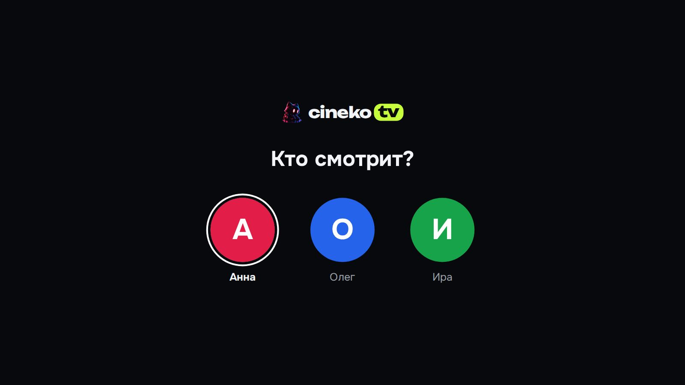
«Кто смотрит?» — профили Анна, Олег, Ира.
Подключение к аккаунту
При первом запуске Cineko показывает «Подключение телевизора»: большой код (например NUGS-5ZTT) и QR.
Способ 1: наведите камеру телефона на QR — откроется Cineko; проверьте код и нажмите «Подключить ТВ».
Способ 2: на телефоне «Устройства» → «Подключить ТВ» (или {{SITE}}/pair) и введите код.
Через секунду ТВ подключится сам. Код действует 5 минут, потом ТВ сам покажет новый.
«Кто смотрит?»
Выберите профиль стрелками и OK. Если у профиля PIN — наберите его (можно цифрами пульта). Чтобы вопрос не появлялся, задайте «Профиль по умолчанию» на телефоне («Устройства»). Сменить профиль позже: внизу меню — аватар → «Сменить профиль».
При запуске каждое оформление показывает свою короткую заставку (~3 секунды, любая кнопка пропускает; выключается в настройках: «Анимация при запуске»). Подключать заново нужно, только если ТВ отключили на телефоне или сбросили данные Media Station X.
Телевизор · пульт
Какие кнопки пульта работают
⏻
1
2
31
4
5
6
7
8
9
0
2
⌂
☰3
▲▼◀▶4
OK5
↩ Назад6
⏹
⏪
⏯7
⏩8
⏮
⏭9
VOL ±11
CH ±10
1Цифры 0–9 — номер ТВ-канала · PIN профиля
2Цветные кнопки — в Cineko не используются
3☰ Меню (если есть) — действия карточки, как «удерживайте OK»
4Стрелки ◀ ▲ ▼ ▶ — перемещение; в плеере ◀ ▶ перемотка (по главам — с остановкой на их началах), ▼ панель
5OK — выбрать · пауза · удерживать — действия
6Назад — ровно один шаг назад
7⏯ Play / Pause — пауза; на странице фильма — сразу смотреть
8⏪ ⏩ и ⏹ — перемотка · закрыть плеер
9⏮ ⏭ — следующая серия / канал / видео
10CH ▲▼ — каналы в «ТВ»; в каталоге — к меню / ниже
11VOL ▲▼ и ⌂ Home — громкость и выход, работают сами по себе
Главное — четыре стрелки, OK и Назад. Остальные кнопки ускоряют работу, но без них можно обойтись. Подсказки внизу экрана всегда говорят, что сейчас делают кнопки: например «OK пауза · ◀ ▶ перемотка · ▼ аудио и субтитры».
Пульты разных ТВ отличаются: на Samsung «Назад» — ↩ Return, на LG — ← Back; на некоторых нет ⏪ ⏩, ⏹ или ☰. Не срабатывает кнопка — пользуйтесь OK и стрелками.
Секрет: на главной наберите ▲▲▼▼◀▶◀▶ OK — Cineko станцует. А если долго ничего не нажимать, мимо может пройти чёрный кот…
Телевизор · пульт
Что делает кнопка на каждом экране
Кнопка
Меню и каталог
Плеер фильмов
ТВ-каналы
«Видео»
◀ ▲ ▼ ▶
Перемещение. ◀ у левого края открывает меню.
◀ ▶ перемотка −10 / +30 с (зажать — быстрее; с главами — до начала главы). ▲ полоса; на паузе — убрать затемнение. ▼ панель: озвучка, субтитры, качество, таймер сна
▲ ▼ канал; ◀ ▶ — информация
◀ ▶ перемотка. ▲ ▼ — похожие и качество
OK
Выбрать. Удерживать — действия («Не интересно», «Продолжить сразу») или «Смотреть в…»
Пауза / продолжить. Во время перемотки — перейти сразу. При «Буферизации» — смотреть сейчас. На заставке — «Пропустить»
Список каналов
Пауза / продолжить
Назад
Один шаг назад
Отменить перемотку → убрать полосу → выйти. На паузе: 1-е — убрать затемнение, 2-е — выход
Выход (сначала отменяет набор цифр)
На паузе 1-е убирает затемнение, 2-е — выход
⏯
На странице фильма — сразу лучшая раздача (на серии — эта серия)
Пауза / продолжить
Информация
Пауза / продолжить
⏹
—
Закрыть плеер
Выход
Выход
⏪ ⏩
—
Перемотка
—
Перемотка
⏭ ⏮
—
⏭ следующая серия
Следующий / предыдущий канал
⏭ следующий похожий ролик
CH ▲▼
CH ▲ — к меню, CH ▼ — вниз
—
Канал вверх / вниз
Похожие и качество
0–9
PIN профиля
—
Номер канала
—
☰ Меню
Действия карточки
—
—
—
VOL, Mute и ⌂ Home работают как обычно — их обрабатывает сам телевизор.
Телевизор · кнопка «Назад»
«Назад» — всегда ровно один шаг
«Назад» никогда не закрывает Cineko случайно и не перезагружает её.
На страницах
Страница фильма → туда, откуда пришли (тот же ряд, та же карточка — подсказка вверху: «Назад — к ряду «Подобрано для вас»»). Глубоко в длинном списке → сначала наверх, к меню; следующее нажатие — назад.
В окнах
Выбор раздачи, «Смотреть в…», панель звука, «Цитаты», «После титров» — «Назад» просто закрывает их.
Выход из Cineko с главной
Из любого ряда одно нажатие «Назад» переносит в меню слева.
Следующее спрашивает «Выйти из Cineko?»: «Остаться» (выбрано сразу) или «Выйти». Нажали ещё раз случайно — окно закроется, Cineko останется.
В плеере
Идёт перемотка → отмена. Видна полоса → спрятать её. Иначе → выход к странице фильма. На паузе: 1-е нажатие убирает затемнение и подписи (видно кадр), 2-е — выход. Открыта подсказка («Картинка подтормаживает…») — «Назад» закрывает её и вы смотрите дальше.
На экране выбора профиля
«Назад» возвращает к фильмам с прежним профилем.
Запутались? Нажимайте «Назад», пока не окажетесь в меню слева, — оттуда можно попасть куда угодно. Cineko при этом не закроется, пока вы сами не выберете «Выйти».
Телевизор · главная
Главный экран и меню
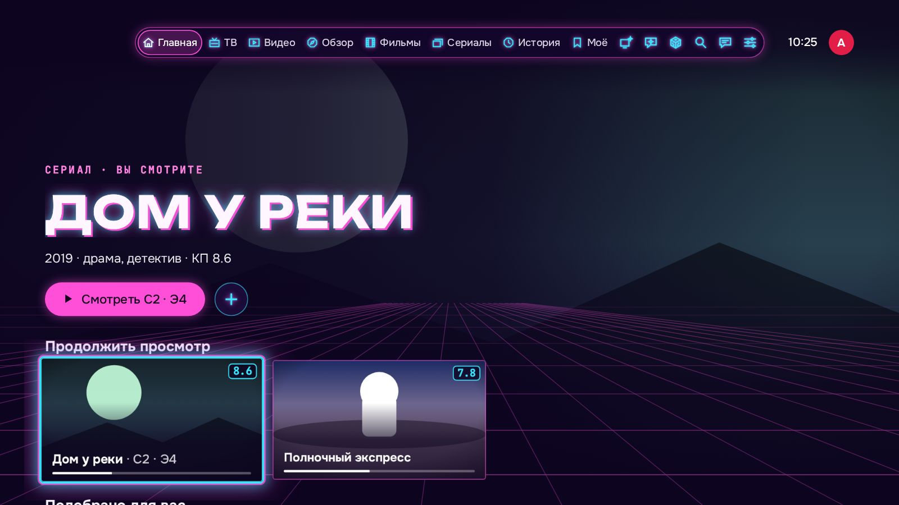
Главная в оформлении «Кинозал»: меню слева, большая карточка, ряды. Вверху справа — название ТВ, состояние сервера и часы.
Меню (в «Кинозале» — слева, в других оформлениях может быть сверху). ◀ раскрывает его с подписями.
Большая карточка: что посмотреть или продолжить («С2 · Э4 — осталось 1 ч 10 мин»). ▼ — к рядам.
Ряды: «Продолжить просмотр», «Подобрано для вас», темы и подборки, «Популярное на этой неделе»… ◀ ▶ — по ряду, OK — открыть, удерживать OK — действия.
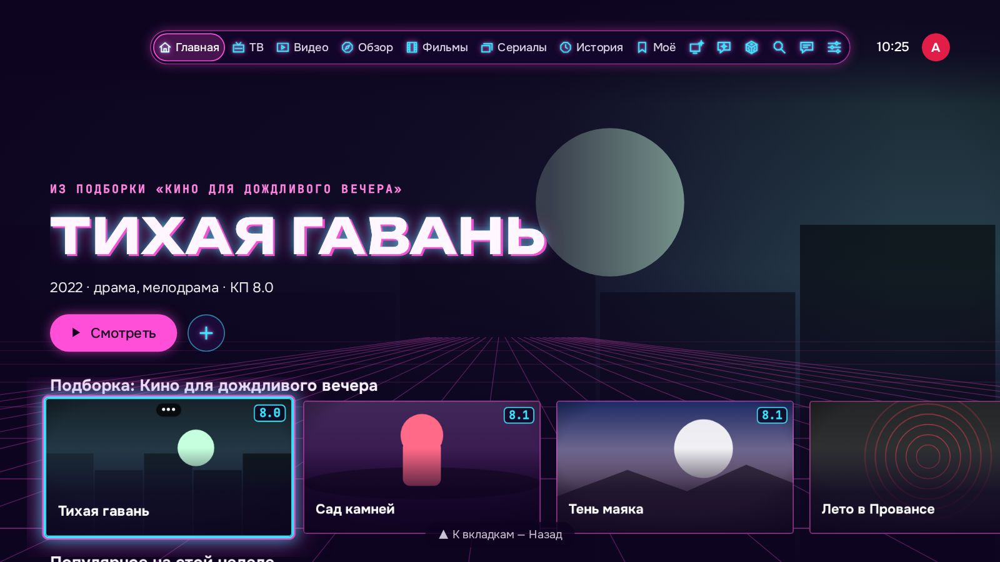
Меню раскрыто.
Пункт меню
Что там
«Поиск»
Экранная клавиатура (русская и ENG)
«Главная» · «ТВ» · «Видео»
Подборки · телеканалы · YouTube
«Обзор» · «Фильмы» · «Сериалы» · «Новые серии»
Подборки и каталог с жанрами; вышедшие серии ваших сериалов
«Удиви меня!» · «Спросить ИИ»
Случайный выбор · вопрос ИИ
«История» · «Моё» · «Сообщения»
Просмотренное · ваш список · письма
«Настройки» · профиль
Внизу меню: «Сменить профиль»
Телевизор · что посмотреть новое
«Для вас» на телевизоре
Ряд-рубрика от ИИ «Подборка: Кино для дождливого вечера». Над названием — почему фильм здесь.
Те же подборки, что на телефоне, — ряды на главной: «Подобрано для вас», «Вам нравятся фильмы про …», «Подборка: …», «Семья советует», «Скрытые жемчужины»… Когда карточка выбрана, над большим названием видна причина: «▸ Вам нравятся фильмы про космос» или личная от ИИ — «✦ Тихая и красивая, как любимый вами «Сад камней», но с напряжённым финалом».
Удерживайте OK на карточке
«Не интересно» — убрать из советов, «Продолжить сразу», «В «Моё»».
«Удиви меня!»
Меню → «Удиви меня!»: настроение → OK. Ещё раз — другой вариант.
«Спросить ИИ»
Готовые вопросы, «Написать свой вопрос» (клавиатура) или «Спросить с телефона» — отсканируйте код, напишите вопрос на телефоне, ответ появится на ТВ.
Вкус
«Настройки» → «Пройти тест вкуса» и «✨ Заполнить по моим фильмам», «О моих вкусах».
Телевизор · вид
Оформления и «Сюрприз»
«Настройки» → «Оформление» (на ТВ или телефоне — общая настройка профиля). Кнопки и пульт работают одинаково во всех оформлениях; меняются шрифты, цвета, меню, заставка при запуске, анимации и звуки.
«Каркас» — синтвейв: неоновые каркасные горы под розовым солнцем. В нём сделаны все снимки этого руководства.
«Сюрприз»
«Настройки» → «Сюрприз»: «Каждый день» или «Каждую неделю» — Cineko сам выберет другое оформление из избранных (отметьте их звёздочкой).
Все оформления
Главный экран в каждом из {{DESIGN_COUNT}} оформлений — в галерее в конце руководства. Там же — все {{LOADER_COUNT}} анимаций загрузки.
Телевизор · фильм
Страница фильма
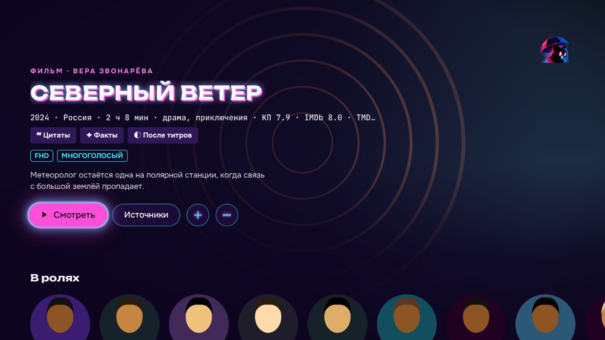
Страница фильма: рейтинги, дополнения, кнопки и выбранная раздача.
▶ Смотреть (или «Продолжить») — сразу лучшая раздача. Удерживайте OK — действия.
☰ «Источники» — список раздач.
🔖 «+ Список» / «✓ В списке» — в «Моё».
… «Ещё»: «Выбрать источник», «Трейлер», «♫ Саундтрек на телефоне» и другие действия.
Над описанием — дополнения новое: ❝ Цитаты, ✦ Факты, ◐ После титров (у досмотренного), ↺ Ранее в сериале (у сериала, если давно не смотрели). ▲ к ним, ◀ ▶ выбрать, OK.
Ниже — «В ролях» (OK на актёре — все его фильмы и сериалы; Назад — обратно), «Похожие», «Рекомендуем», «Подробно». Вверху — куда вернёт «Назад».
Если фильм открыли с телефона, внизу мелькнёт «Открыл(а) …».
Телевизор · дополнения новое
Цитаты, факты, «После титров» и саундтрек
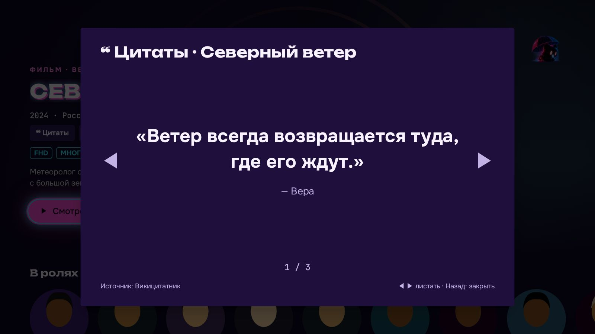
«Цитаты»: ◀ ▶ листать, Назад — закрыть.
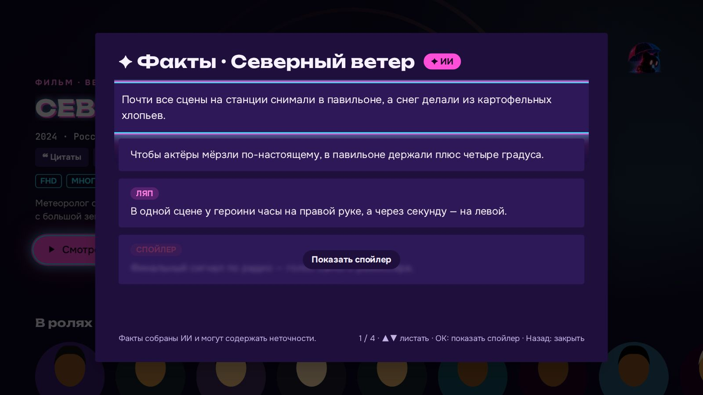
«Факты»: ▲▼ листать, OK — показать спойлер.
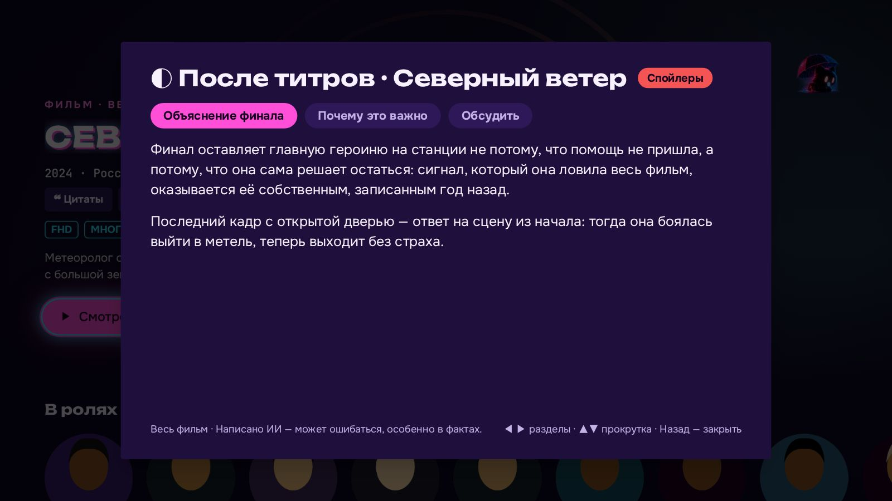
«После титров»: ◀ ▶ разделы, ▲▼ прокрутка.
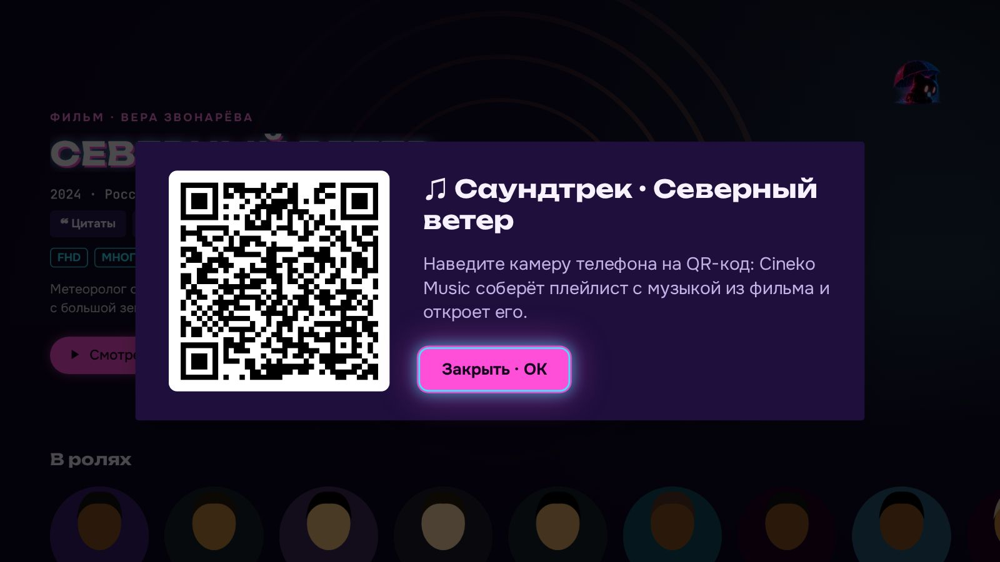
«♫ Саундтрек на телефоне»: QR для Cineko Music.
«После титров» — «Объяснение финала», «Почему это важно», «Обсудить». В «Обсудить» — «Задать вопрос» (экранная клавиатура) и «Новый разговор». С телефона печатать проще: откройте этот фильм в Cineko на телефоне — разговор там же.
«Ранее в сериале» — пересказ просмотренного (следующая страница).
Саундтрек — «…» «Ещё» → «♫ Саундтрек на телефоне»; наведите камеру телефона на QR — Cineko Music соберёт плейлист и откроет его. «Закрыть · OK».
Телевизор · сериал
Сериал: сезоны, серии и «Ранее в сериале»
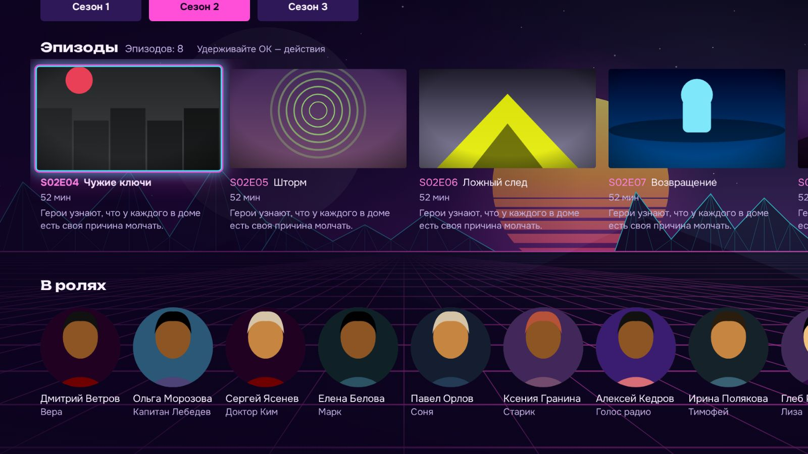
▼ от кнопок — вкладки сезонов (◀ ▶) и ряд «Эпизоды».
У сериала: вкладки сезонов (◀ ▶, OK), ряд «Эпизоды» — OK смотреть серию, удерживать OK — действия (отметить просмотренной, сезон…). ⏯ на серии — сразу её. Ниже — «В ролях».
«Продолжить» на большой кнопке включает ту серию и то место, где вы остановились.
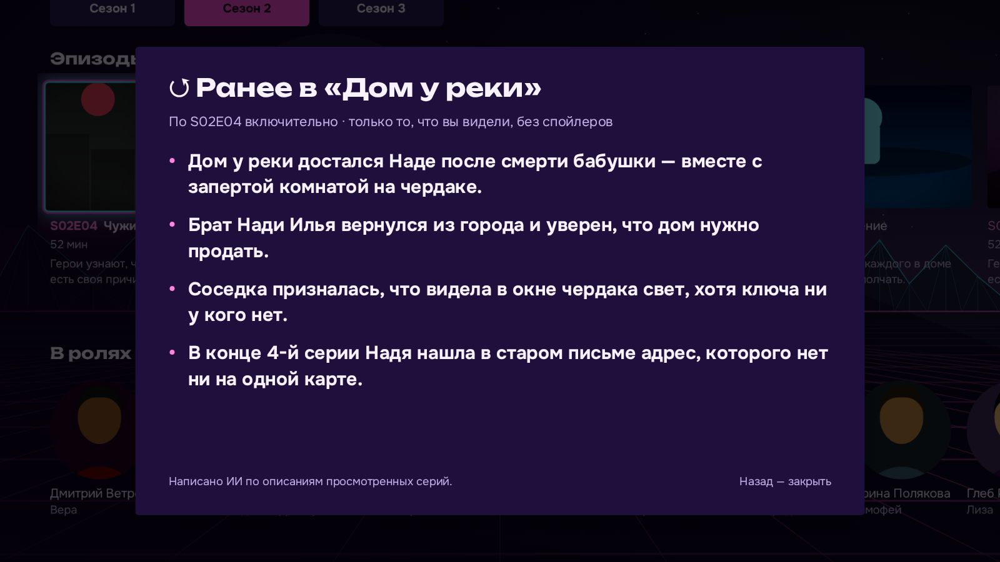
«↺ Ранее в сериале»: только то, что вы уже видели.
Телевизор · раздачи
Выбор раздачи и плеера
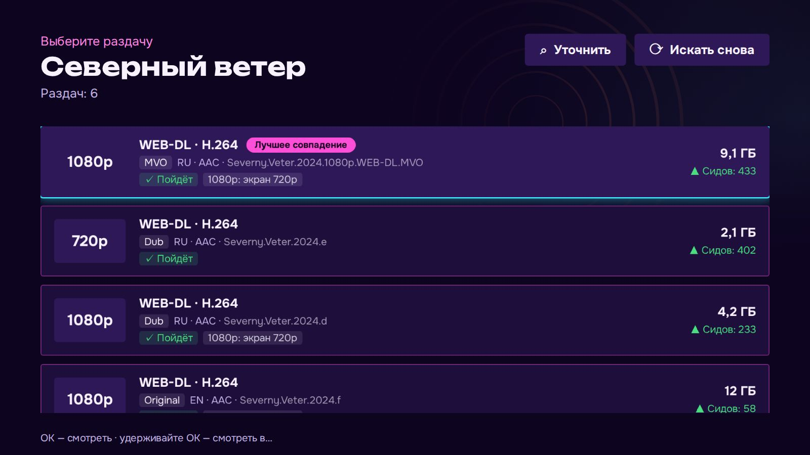
«Выберите раздачу»: качество, озвучка, звук, размер, сиды и предупреждения.
«Уточнить» — искать своими словами; «Искать снова» — обновить список; «Показать все» — и неподходящие.
Строка раздачи: качество, озвучка, трекер, размер, ▲ сиды; «Лучшее совпадение»; «Смотрели» — то, что вы уже включали; «✓ Пойдёт».
Красным — что этот ТВ не умеет («✗ Звук TrueHD не поддерживается»), «тяжёлая: 69 Мбит/с», «Может подтормаживать на этом устройстве» новое.
OK — смотреть · удерживайте OK — «Смотреть в…».
Плеер
Когда
«Плеер Cineko»
Встроенный. Лучше всего для MP4/WebM; MKV, HEVC и DTS могут не играть (тогда сервер перекодирует звук).
«Плеер Media Station X»
Родной плеер ТВ. Играет большинство форматов (AC3/DTS, MKV).
«Внешнее приложение»
Android-ТВ: VLC, MX Player…
Плеер по умолчанию — «Настройки» → «Плеер по умолчанию» (или «Спрашивать каждый раз»).
Телевизор · плеер
Плеер: запуск, перемотка и главы
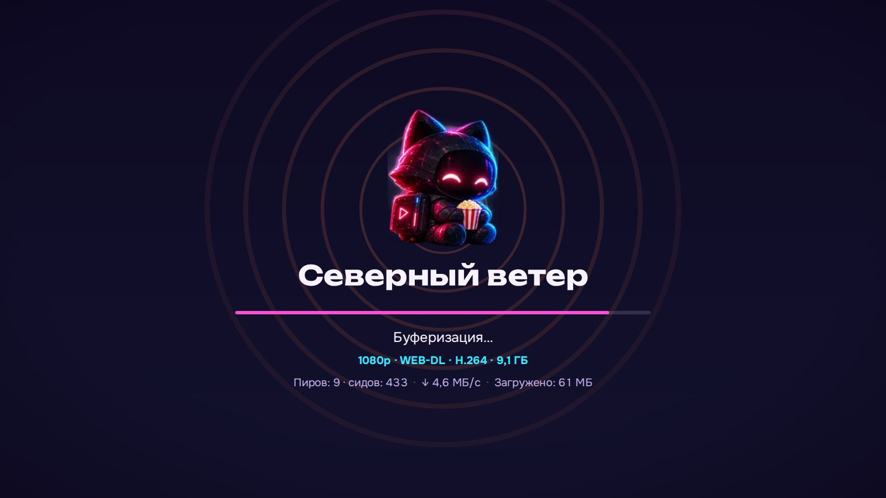
Загрузка в стиле «Cineko с попкорном».
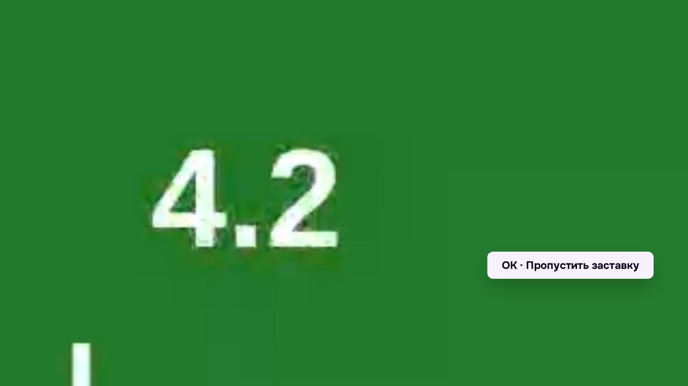
Полоса: время, глава, метки глав, статистика.
Запуск
Пока поток готовится — «Готовим поток…» / «Буферизация…», процент, пиры и скорость. Обычно 5–30 секунд. Процент больше не «откатывается» назад, а если загрузка застряла, Cineko сам переоткроет поток. Назад во время подготовки — отмена.
Начатый фильм спросит «Продолжить с того же места?». Если телевизор сам перезапустит поток с начала, Cineko заметит это и вернёт вас туда, где вы были новое.
Перемотка
◀ — назад на 10 с, ▶ — вперёд на 30 с. Нажимайте несколько раз или держите — шаг растёт (×2, ×4, ×8). Прыжок — когда отпустите; OK — сразу, Назад — отмена.
Главы новое
Если в файле есть главы, на полосе видны метки, рядом со временем — «Глава 2 · Станция», а ◀ ▶ останавливаются на началах глав.
Полоса и статистика
▲ показывает и прячет полосу. Пока она на экране — живая статистика: пиры и сиды, скорость, нагрузка сервера, «Пропущено кадров: 2 %». «Показывать буфер» (настройки ТВ) добавляет, сколько загружено наперёд.
Телевизор · плеер новое
Пропуск заставок и титров, плавность
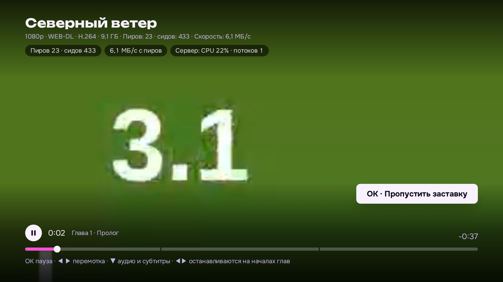
Во время заставки справа внизу: «OK · Пропустить заставку».
«Заставки и титры»
«OK · Пропустить заставку», «OK · Пропустить пересказ» («Ранее в сериале» в начале серии), у аниме — «OK · Пропустить опенинг».
На финальных титрах — «OK · Следующая серия».
В режиме «Пропускать сами» — «Заставка пропущена · OK · Вернуть» (6 секунд, чтобы передумать).
Настройка: «Настройки» → «Заставки и титры»: «Кнопка «Пропустить»» / «Пропускать сами» / «Не показывать». Время берётся из глав файла и открытых баз; в дубляже может сдвигаться на пару секунд.
Следующая серия
«Следующая серия через 10 с»: «OK · Смотреть сейчас», Назад — остаться. «Отсчёт перед следующим» выключен — начнётся сразу.
Плавность
Cineko узнаёт у телевизора, какое видео он тянет без рывков, и следит, сколько кадров пропадает. Раздачи, которые на этом ТВ подтормаживают, уходят вниз списка (но не исчезают).
Если картинка всё-таки дёргается: «Картинка подтормаживает — включить более лёгкую раздачу?» ◀ ▶ выбрать: «Включить полегче» — Cineko найдёт похожую раздачу полегче и продолжит с того же места; «Не сейчас» — смотреть дальше. Назад — закрыть.
Похожая подсказка о медленном интернете: «Скорость соединения ниже, чем нужно этой раздаче (≈6 из 63 Мбит/с)» — «Выбрать раздачу полегче». Она включается в «Это устройство» → «Предупреждать о медленной скорости».
Телевизор · плеер
Пауза, звук, субтитры и таймер сна
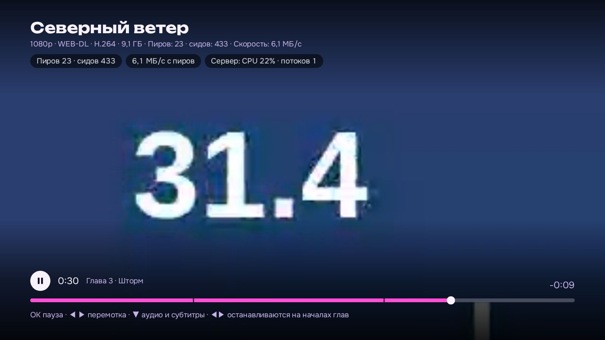
Пауза: сведения о раздаче и подсказки.
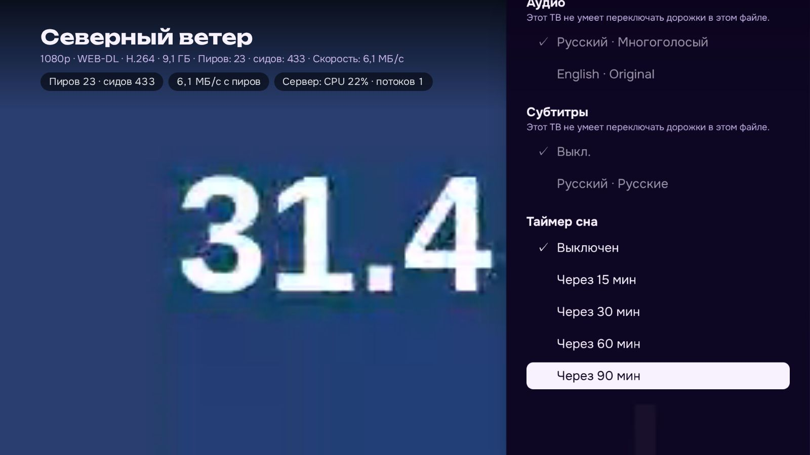
Панель ▼: аудио, субтитры, таймер сна.
Пауза
OK — пауза / продолжить. ▲ или первое «Назад» убирают затемнение, чтобы рассмотреть кадр. Пауза дольше 5 минут — включится заставка (спящий Cineko или DVD); любая кнопка будит и больше ничего не делает.
Панель ▼
«Серии» — «⏮ Предыдущая серия» / «Следующая серия ⏭».
«Аудио» — озвучки раздачи; «Совместимый звук (AAC)»: Авто / Вкл / Выкл.
«Субтитры» — «Выкл.» или дорожка.
«Качество» — у онлайн-источников.
▲ ▼ выбрать, OK включить; ◀ ▶ или Назад закрывают панель. «Этот ТВ не умеет переключать дорожки в этом файле» — выберите раздачу с нужной озвучкой или плеер Media Station X.
На полосе виден значок «☾ Сон через 30 мин» или «☾ Сон после этой серии».
В последнюю минуту экран мягко темнеет и звук становится тише. Любая кнопка — «Таймер продлён на 10 мин».
В конце фильм встанет на паузу: «Спокойной ночи · Нажмите любую кнопку, чтобы продолжить».
Телевизор · плеер
Сообщения плеера: что они значат
Надпись
Что это и что делать
«Звук перекодируется»
Телевизор не умеет звук этой раздачи (AC3, DTS, TrueHD…), сервер на лету переводит его в AAC. Ничего делать не нужно. Не появился звук — другая раздача или в панели ▼ «Совместимый звук (AAC)» → «Вкл».
«Переключаю звук…»
Вы выбрали другую озвучку, поток перезапускается с того же места.
«Буферизация… 45%»
Данные не успевают прийти. Подождите — или OK («OK — смотреть сейчас»).
«Картинка подтормаживает — включить более лёгкую раздачу?»
◀ «Включить полегче» — похожая раздача полегче с того же места; «Не сейчас» — смотреть дальше.
«Скорость соединения ниже, чем нужно этой раздаче»
Раздача тяжела для интернета. «Выбрать раздачу полегче» или «Не сейчас».
«OK · Пропустить заставку / пересказ / опенинг»
Начальная заставка или пересказ. OK — перескочить.
«OK · Следующая серия»
Начались финальные титры. OK — к следующей серии.
«Следующая серия через 10 с»
OK — «Смотреть сейчас», Назад — остаться.
«Как вам «…»?»
После фильма: от 1 до 10 звёзд ◀ ▶ и OK, или «Не сейчас».
«Этот ТВ не может воспроизвести файл»
Формат не поддерживается. «Другая раздача» или удерживайте OK на раздаче → «Плеер Media Station X».
«Не удаётся воспроизвести раздачу · Следующая попытка: …»
Cineko сам пробует следующую подходящую раздачу.
«Сейчас эту раздачу никто не раздаёт»
Нет сидов. Выберите раздачу с бо́льшим числом сидов.
«Сервер потоковой передачи недоступен»
Проблема на сервере — сообщите администратору.
«Спокойной ночи»
Сработал таймер сна. Любая кнопка — продолжить.
Телевизор · эфир, YouTube, поиск
ТВ-каналы, «Видео» и поиск
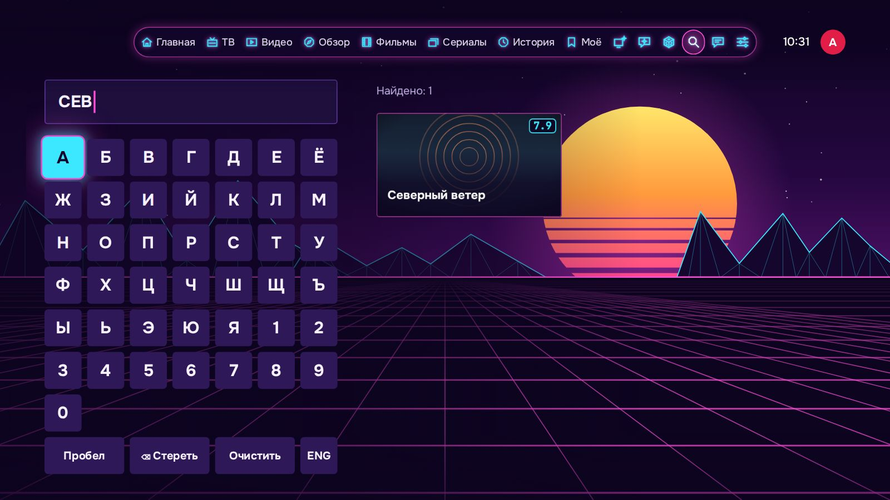
«Поиск»: экранная клавиатура, результаты справа.
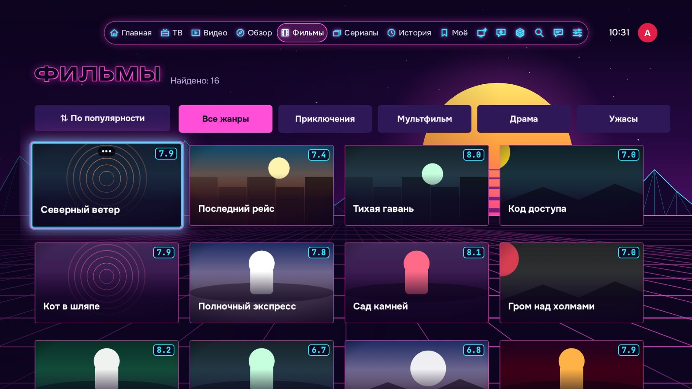
«Фильмы»: каталог с жанрами.
ТВ-каналы
Меню → «ТВ». Группы сверху («Все», «Избранное», «Кино»…), у канала — что идёт сейчас и далее. OK — смотреть, удерживайте OK — «В избранное». На главной — ряд «Продолжить смотреть ТВ».
В эфире: ▲ ▼ или CH — соседний канал; 0–9 — номер; OK — список каналов; Назад — выход.
Поиск
Буквы — стрелками и OK; «Пробел», «Стереть», «Очистить», «ENG» — смена языка. Достаточно первых букв.
«Видео» (YouTube)
«Продолжить», «Подписки», «В тренде», «Смотреть позже», «Поиск на YouTube». В ролике: OK пауза, ◀ ▶ перемотка, ▲ ▼ — «Похожие видео» и «Качество», Назад — выход. Удерживайте OK на ролике — «Смотреть позже», канал, удалить из истории.
Автовоспроизведениеновое: в конце ролика карточка «Далее · Следующая часть · через 10 с» («OK — смотреть · Назад — отмена»). Настройки: «Автовоспроизведение», «Качество видео», «Скрывать Shorts».
«История», «Моё», «Сообщения»
Просмотренное; ваш список («+ Список»); письма от администратора (OK — прочитано).
Телевизор · настройки
Настройки на телевизоре
Меню → «Настройки». ▲ ▼ — строка, ◀ ▶ — изменить значение (сохраняется сразу), справа — подсказка и предпросмотр.
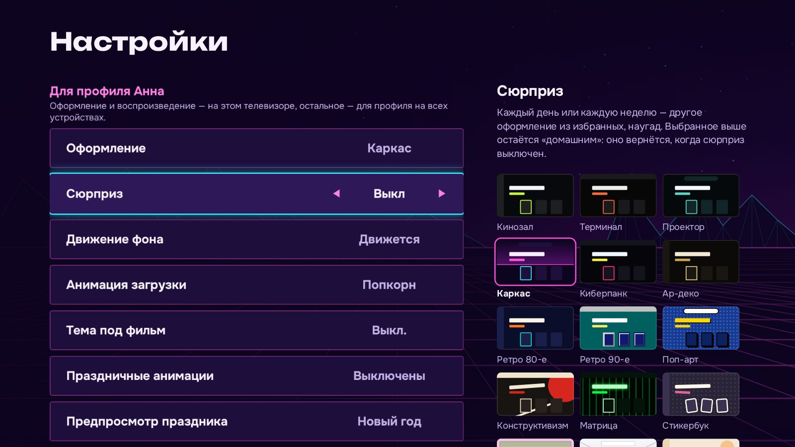
«Сюрприз» и предпросмотр оформлений.
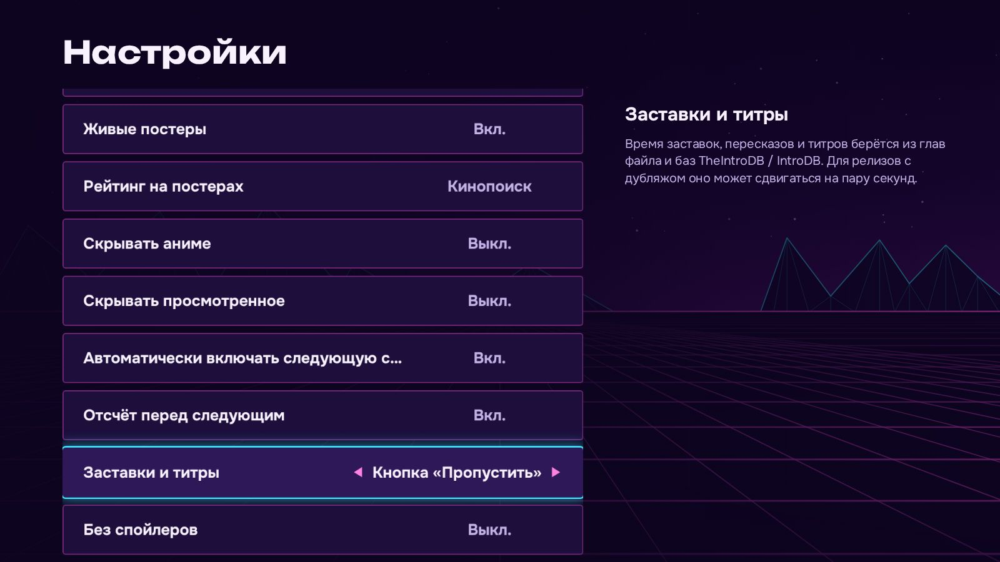
«Заставки и титры».
Для профиля (как на телефоне)
«Оформление», «Сюрприз» и «Избранные оформления», «Движение фона» (в «Каркасе» и «Матрице»), «Тема» (в «Кинозале»), «Анимация загрузки», «Праздничные анимации» и «Предпросмотр праздника», «Уютный режим», «Живые постеры», «Рейтинг на постерах», «Скрывать аниме», «Скрывать просмотренное», «Автоматически включать следующую серию», «Отсчёт перед следующим», «Заставки и титры», «Без спойлеров», «Делиться с семьёй», «Показывать, что смотрят другие», «Подборки на главной», «О моих вкусах», «Пройти тест вкуса», «✨ Заполнить по моим фильмам», «Минимум оценок», «Качество видео», «Скрывать Shorts», «Автовоспроизведение», «Источники».
Телевизор · настройки
«Это устройство», заставка и язык
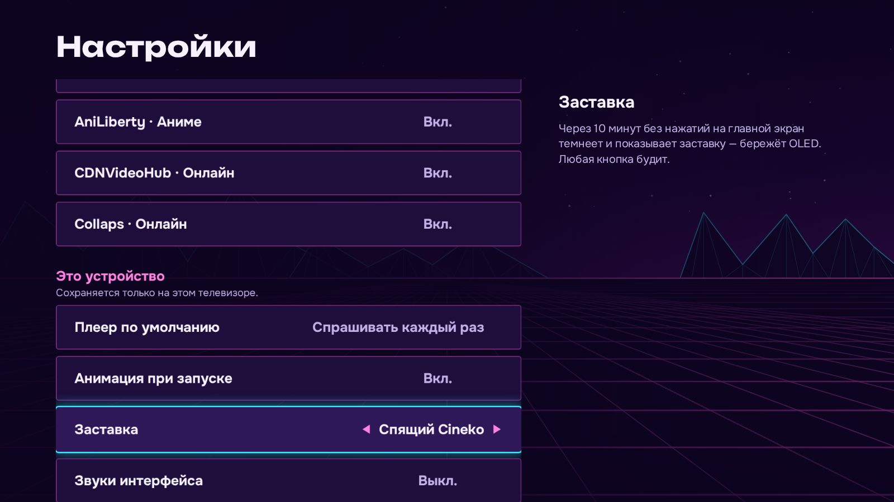
«Это устройство»: сохраняется только на этом телевизоре.Заставка «Спящий Cineko».
«Плеер по умолчанию».
«Анимация при запуске» — короткая заставка оформления при каждом запуске.
«Заставка»новое: «Спящий Cineko» / «Логотип DVD» / «Выключена». Через 10 минут без нажатий на главной (и через 5 минут паузы в плеере) экран темнеет — бережёт OLED. Любая кнопка будит.
«Звуки интерфейса»новое — тихий тик при перемещении и щелчок на OK в духе оформления. По умолчанию выключены.
«Язык»: Русский / English / Қазақша.
Подбор раздач: «Максимальное разрешение», «Максимальный битрейт», «Максимальный размер файла», «Предпочтительный видеокодек», «HDR», «Звук», «Предпочитать файлы поменьше», «Предупреждать о медленной скорости», «Показывать буфер», «Измерять скорость интернета в фоне» и «Проверить сейчас»; пресеты; «Сбросить на авто».
«Отправлять состояние ТВ (память, плавность)» — владелец видит на телефоне в «Устройства».
«Об этом телевизоре» — экран, модель, сеть, версия и «Форматы, которые играет этот ТВ»: ✓ да · ~ возможно · ✕ нет. Удобно показать администратору.
Телевизор + телефон
Управление телевизором с телефона
Искать и выбирать удобнее на телефоне, а смотреть — на телевизоре.
Что
Как
Включить фильм
Страница фильма → «Смотреть на ТВ»; у серии — цветный ▶. Своя раздача: «Раздачи» → «Смотреть на ТВ» / «Открыть в…».
Ролик → «На ТВ»; на пульте — качество, «Что дальше», «Остановить».
Вопрос ИИ для ТВ
На ТВ «Спросить ИИ» → «Спросить с телефона»: ответ появится на экране телевизора.
Обсудить финал
На телефоне откройте фильм → «◐ После титров» → «Обсудить» — печатать удобнее.
Саундтрек
На ТВ «Ещё» → «♫ Саундтрек на телефоне» → QR; или на телефоне «Послушать саундтрек».
Проверить связь
«Устройства» → «Отправить тестовое сообщение».
Настроить ТВ
«Устройства» → «Настройки воспроизведения», «Профиль по умолчанию», «Переименовать», «Поделиться».
Если на ТВ не выбран профиль, отправленный фильм откроется сразу после выбора: «С телефона отправили фильм или сериал. Выберите профиль, чтобы открыть».
Прогресс общий для всех устройств: начали на телевизоре — продолжите на телефоне в дороге, и наоборот. Cineko спросит «Где смотреть?» и включит ту же раздачу с того же места.
Помощь
Если что-то не работает
Проблема
Что сделать
Нет звука
Скорее всего, ТВ не умеет звук раздачи (AC3/DTS/TrueHD). Подождите — появится «Звук перекодируется». Не помогло: панель ▼ → «Совместимый звук (AAC)» → «Вкл»; другая раздача; или удерживайте OK на раздаче → «Плеер Media Station X». В настройках ТВ: «Звук» → «Всегда перекодировать (AAC)».
Нет нужной озвучки
Панель ▼ → «Аудио». Нет в раздаче — другая (фильтр «Озвучка»). Любимые студии — «Настройки» → «Предпочитаемые озвучки».
Тормозит, «Буферизация…», дёргается
Примите предложение «Включить полегче». Выберите раздачу полегче (1080p вместо 4K, меньше ГБ) и с бо́льшим числом сидов. Пресет «Слабый ТВ / медленный интернет»; «Проверить сейчас» покажет скорость сети. Совсем медленная раздача — «Скачать на сервер».
Старый ТВ медленно работает
Оформление «Кинозал», «Анимация при запуске» — выкл., «Движение фона» — «Спокойно», «Праздничные анимации» — «Спокойно» или выкл.
Долго «Готовим поток…»
Мало сидов. Подождите минуту или выберите другую раздачу.
Кнопка «Пропустить» не вовремя
Время заставки взято из базы и для дубляжа может сдвигаться. Если мешает — «Заставки и титры» → «Не показывать».
Фильм начался с начала, хотя смотрели до середины
Обычно Cineko сам вернёт на нужное место через пару секунд. Если нет — Назад и «Продолжить» на странице фильма.
«Назад» ведёт не туда
«Назад» всегда делает один шаг: из глубины страницы сначала наверх / в меню, на паузе — сначала убирает затемнение.
Экран потемнел, кот спит
Это заставка. Нажмите любую кнопку.
ТВ не подключается / «Переподключение…»
Проверьте интернет на ТВ и откройте Cineko заново. На телефоне в «Устройства» должна быть зелёная точка. Не помогло — «Отключить» этот ТВ и подключить заново по коду.
Код подключения не подходит
Код живёт 5 минут — ТВ покажет новый. Проверьте 0 и O. Можно сканировать QR.
«Видео» недоступно
«Сервис YouTube не отвечает» — проблема на сервере. Сервер сам перезапускает его ночью; если не прошло — скажите администратору.
Нет кнопок ИИ, «ИИ выключен», «На сегодня всё»
ИИ не настроен или дневной лимит исчерпан — попробуйте завтра или скажите администратору.
Фильм не находится / нет раздач
«Искать снова» или «Уточнить» — оригинальное название, без года.
Если ничего не помогло: на ТВ «Настройки» → «Об этом телевизоре», сфотографируйте экран и пришлите администратору вместе с названием фильма и временем.
Шпаргалка · распечатайте и положите у телевизора
Пульт Cineko
В фильме
OK
пауза / продолжить; на заставке — пропустить
◀ ▶
−10 с / +30 с (держать — быстрее; с главами — к началу главы)
▼
озвучка, субтитры, качество, таймер сна
▲
показать полосу / убрать затемнение
Назад
спрятать полосу → выйти
⏭
следующая серия
ТВ-каналы
▲ ▼ / CH
следующий / предыдущий канал
0–9
номер канала
OK
список каналов
Назад
выход из эфира
YouTube («Видео»)
◀ ▶
перемотка
▲ ▼
похожие и качество
Везде
◀ ▲ ▼ ▶
перемещение; ◀ у края — меню
OK
выбрать; удерживать — действия
Назад
ровно один шаг назад
⏯
на странице фильма — сразу смотреть
Если нет звука
Подождите: «Звук перекодируется». Нет — ▼ → «Совместимый звук (AAC)» → Вкл, или другая раздача.
Если тормозит
«Включить полегче» в подсказке, или раздача 1080p с бо́льшим числом сидов.
Перед сном
▼ → «Таймер сна» → «После этой серии».
Телефон — тоже пульт: {{SITE}} → нажмите на телевизор на главной.
 cinekotv
cinekotv